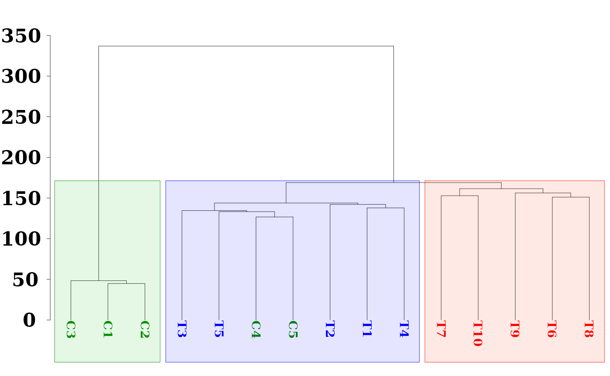
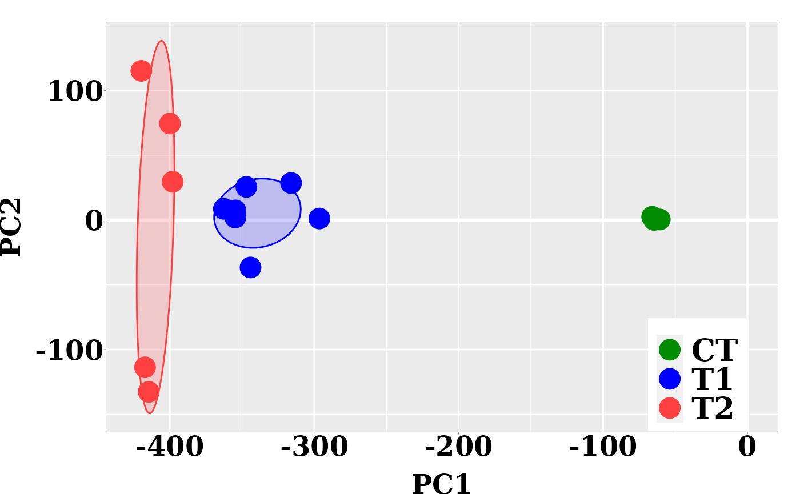
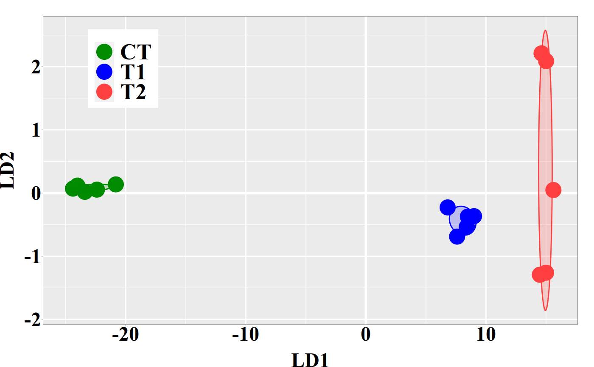

vignettes/pca_lda_with_methylit.Rmd
pca_lda_with_methylit.RmdAbstract
When methylation analysis is intended for diagnostic/prognostic purposes, for example, in clinical applications for patient diagnostics, to know whether the patient would be in healthy or disease stage we would like to have a good predictor tool in our side. It turns out that classical machine learning (ML) tools like hierarchical clustering, principal components and linear discriminant analysis can help us to reach such a goal. The current Methyl-IT downstream analysis is equipped with the mentioned ML tools.
The discrimination of the methylation signal from the stochastic methylation background resultant from the standard (non-stressful) biological processes is a critical step for the genome-wide methylation analysis. Such a discrimination requires for the knowledge of the probability distribution of the information divergence of methylation levels and a proper evaluation of the classification performance of differentially methylated positions (DMPs) into two classes: DMPs from control and DMPs from treatment.
Once a methylation analysis is performed to detect the genome-wide DMPs, a natural next step is to investigate whether the detected DMPs carries enough discriminatory power to discern between individual groups. Then, we must move from the methylation analysis to statistical/machine learning field (multivariate statistics). To reach our goal, each individual can be represented as a vector from the \(N\)-dimensional space of DMPs, where DMPs can be expressed in terms of some suitable measurement as function of the methylation levels. These suitable measurement are information divergences, such as total variation distance (\(TV_d\), the absolute value of methylation levels) and Hellinger divergence (\(H\)). It is worthy to observe that methylation levels are uncertainty measurements and, therefore, they do not carry information per se. Information is only carried on measurements expressing uncertainty variations like \(TV_d\), \(H\), Jensen-Shannon Divergence, and in general, the so called information theoretical divergences (1).
The \(N\)-dimensional space of DMPs is, usually, too big. So, a first dimension reduction is required. This can be done by splitting the chromosomes into non-overlapping genomic region and next computing some statistic like the sum or mean of some information divergences of methylation levels at DMPs inside of each region. Still we will have to deal with a multidimensional space, but acceptable for a meaningful application of hierarchical clustering (HC), principal component analysis (PCA) and linear discriminant analysis (LDA). In the current examples, Methyl-IT methylation analysis will be applied to a dataset of simulated samples to detect DMPs on then. Next, after space dimension reduction, the mentioned machine learning approached will be applied.
For the current example on methylation analysis with Methyl-IT we will use simulated data. Read-count matrices of methylated and unmethylated cytosine are generated with MethylIT.utils function simulateCounts. A basic example generating datasets is given in the web page: Methylation analysis with Methyl-IT
library(MethylIT)
library(MethylIT.utils)
library(ggplot2)
library(ape)
alpha.ct <- 0.019
alpha.g1 <- 0.022
alpha.g2 <- 0.025
# The number of cytosine sites to generate
sites = 1.5e5
# Set a seed for pseudo-random number generation
set.seed(124)
control.nam <- c("C1", "C2", "C3", "C4", "C5")
treatment.nam1 <- c("T1", "T2", "T3", "T4", "T5")
treatment.nam2 <- c("T6", "T7", "T8", "T9", "T10")
# Reference group
ref0 = simulateCounts(num.samples = 3, sites = sites, alpha = alpha.ct,
beta = 0.5, size = 50, theta = 4.5,
sample.ids = c("R1", "R2", "R3"))
# Control group
ctrl = simulateCounts(num.samples = 5, sites = sites, alpha = alpha.ct,
beta = 0.5, size = 50, theta = 4.5,
sample.ids = control.nam)
# Treatment group II
treat = simulateCounts(num.samples = 5, sites = sites, alpha = alpha.g1,
beta = 0.5, size = 50, theta = 4.5,
sample.ids = treatment.nam1)
# Treatment group II
treat2 = simulateCounts(num.samples = 5, sites = sites, alpha = alpha.g2,
beta = 0.5, size = 50, theta = 4.5,
sample.ids = treatment.nam2)A reference sample (virtual individual) is created using individual samples from the control population using function poolFromGRlist. The reference sample is further used to compute the information divergences of methylation levels, \(TV_d\) and \(H\), with function estimateDivergence. This is a first fundamental step to remove the background noise (fluctuations) generated by the inherent stochasticity of the molecular processes in the cells.
# === Methylation level divergences ===
# Reference sample
ref = poolFromGRlist(ref0, stat = "mean", num.cores = 4L, verbose = FALSE)
divs <- estimateDivergence(ref = ref, indiv = c(ctrl, treat, treat2), Bayesian = TRUE,
num.cores = 6L, percentile = 1, verbose = FALSE)
# To remove hd == 0 to estimate. The methylation signal only is given for
divs = lapply(divs, function(div) div[ abs(div$hdiv) > 0 ], keep.attr = TRUE)
names(divs) <- names(divs)
divs## InfDiv object of length: 15
## -------
## $C1
## GRanges object with 26720 ranges and 9 metadata columns:
## seqnames ranges strand | c1 t1 c2 t2
## <Rle> <IRanges> <Rle> | <numeric> <numeric> <numeric> <numeric>
## [1] 1 7 * | 2 42 6 38
## [2] 1 12 * | 23 62 0 85
## [3] 1 19 * | 12 27 0 39
## [4] 1 22 * | 13 27 0 40
## [5] 1 31 * | 58 49 80 27
## ... ... ... ... . ... ... ... ...
## [26716] 1 149977 * | 11 35 34 12
## [26717] 1 149979 * | 16 34 0 50
## [26718] 1 149990 * | 24 54 0 78
## [26719] 1 149994 * | 25 51 76 0
## [26720] 1 149995 * | 16 63 0 79
## p1 p2 TV bay.TV hdiv
## <numeric> <numeric> <numeric> <numeric> <numeric>
## [1] 0.0721422 0.13768432 0.0909091 0.0655421 0.526471
## [2] 0.2659280 0.00327293 -0.2705882 -0.2626551 19.800862
## [3] 0.2920976 0.00697775 -0.3076923 -0.2851199 9.313997
## [4] 0.3068138 0.00681017 -0.3250000 -0.3000036 10.213202
## [5] 0.5191743 0.73900460 0.2056075 0.2198303 5.688769
## ... ... ... ... ... ...
## [26716] 0.235823 0.71967696 0.500000 0.483854 11.7687
## [26717] 0.305641 0.00549133 -0.320000 -0.300150 13.0602
## [26718] 0.299161 0.00356061 -0.307692 -0.295601 20.8075
## [26719] 0.318165 0.98256166 0.671053 0.664396 51.1029
## [26720] 0.203882 0.00351646 -0.202532 -0.200366 13.2064
## -------
## seqinfo: 1 sequence from an unspecified genome; no seqlengths
##
## ...
## <14 more GRanges elements>
## -------To get some statistical description about the sample is useful. Here, empirical critical values for the probability distribution of \(H\) and \(TV\) can is obtained using quantile function from the R package stats.
critical.val <- do.call(rbind, lapply(divs, function(x) {
x <- x[x$hdiv > 0]
hd.95 = quantile(x$hdiv, 0.95)
tv.95 = quantile(abs(x$bay.TV), 0.95)
return(c(tv = tv.95, hd = hd.95))
}))
critical.val## tv.95% hd.95%
## C1 0.6523406 62.26763
## C2 0.6500765 60.89674
## C3 0.6508274 61.48960
## C4 0.4858965 56.63342
## C5 0.4970348 58.16023
## T1 0.9236731 126.34191
## T2 0.9136241 120.45367
## T3 0.9137810 121.99373
## T4 0.9192143 124.54298
## T5 0.9225918 124.25236
## T6 0.9447922 132.69308
## T7 0.9447348 134.88441
## T8 0.9408379 131.80496
## T9 0.9482600 134.68997
## T10 0.9456255 133.87163Here, the methylation signal is expressed in terms of Hellinger divergence of methylation levels. Here, the signal distribution is modelled by a Weibull probability distribution model. Basically, the model could be a member of the generalized gamma distribution family. For example, it could be gamma distribution, Weibull, or log-normal. To describe the signal, we may prefer a model with a cross-validations: R.Cross.val > 0.95. Cross-validations for the nonlinear regressions are performed in each methylome as described in (2). The non-linear fit is performed through the function nonlinearFitDist
The best model excluding “GGamma3P” model, for which the computation is computationally expensive:
d <- c("Weibull2P", "Weibull3P", "Gamma2P", "Gamma3P")
gof <- gofReport(HD = divs, column = 9L, model = d, num.cores = 6L,
output = "all", verbose = FALSE)
gof$bestModel## C1 C2 C3 C4 C5 T1
## "Weibull3P" "Weibull3P" "Weibull3P" "Weibull3P" "Weibull3P" "Weibull3P"
## T2 T3 T4 T5 T6 T7
## "Weibull3P" "Weibull3P" "Weibull3P" "Weibull3P" "Weibull3P" "Weibull3P"
## T8 T9 T10
## "Weibull3P" "Weibull3P" "Weibull3P"Although we did not included the main member of the generalized gamma distribution family (“GGamma3P”), the Cross-validations correlation coefficient w3p_R.Cross.val values above 0.99 gives us some peace of mind on our confidence on the model prediction power/performance when confronted with external data sets (AIC and BIC are not conceived to provide such an information).
gof$stats## w2p_AIC w2p_R.Cross.val w3p_AIC w3p_R.Cross.val g2p_AIC
## C1 -172642.2 0.9994637 -174557.8 0.9994971 -164820.4
## C2 -175595.0 0.9995131 -177009.2 0.9995357 -167532.7
## C3 -177238.5 0.9995420 -178755.4 0.9995652 -169774.2
## C4 -219212.7 0.9994949 -264109.7 0.9998550 -206296.0
## C5 -217448.4 0.9994364 -273042.8 0.9998800 -205264.1
## T1 -168080.2 0.9972703 -225576.5 0.9994669 -160888.3
## T2 -167285.4 0.9972726 -226887.3 0.9995014 -160748.1
## T3 -170302.3 0.9974335 -227800.1 0.9995012 -163998.4
## T4 -168551.4 0.9973218 -225182.4 0.9994660 -162169.8
## T5 -167122.8 0.9972265 -227209.2 0.9994984 -160694.8
## T6 -173245.9 0.9971879 -229257.5 0.9993946 -165656.8
## T7 -170905.5 0.9970146 -228452.9 0.9993820 -163342.2
## T8 -171372.8 0.9970759 -229287.3 0.9994006 -163649.6
## T9 -170097.3 0.9969613 -227490.8 0.9993671 -162250.6
## T10 -171267.1 0.9970281 -228041.8 0.9993708 -163857.5
## g2p_R.Cross.val g3p_AIC g3p_R.Cross.val bestModel
## C1 0.9993928 -166320.4 0.9994541 w3p
## C2 0.9994499 -168752.0 0.9994940 w3p
## C3 0.9994861 -170987.0 0.9995261 w3p
## C4 0.9993131 -262844.7 0.9998672 Needs revision
## C5 0.9992280 -266936.2 0.9998725 w3p
## T1 0.9963827 -205274.3 0.9989377 w3p
## T2 0.9964683 -206911.8 0.9990147 w3p
## T3 0.9966883 -208522.0 0.9990290 w3p
## T4 0.9965314 -205649.3 0.9989540 w3p
## T5 0.9964093 -206817.8 0.9989988 w3p
## T6 0.9962175 -208522.1 0.9988039 w3p
## T7 0.9959969 -206833.7 0.9987502 w3p
## T8 0.9960768 -207922.9 0.9988034 w3p
## T9 0.9958859 -205571.9 0.9987164 w3p
## T10 0.9960168 -206551.8 0.9987320 w3pThe above statistical description of the dataset (evidently) suggests that there two main groups: control and treatments, while treatment group would split into two subgroups of samples. In the current case, to search for a good cutpoint, we do not need to use all the samples. The critical value \(H_{\alpha=0.05}=33.51223\) suggests that any optimal cutpoint for the subset of samples T1 to T5 will be optimal for the samples T6 to T10 as well.
Below, we are letting the PCA+LDA model classifier to take the decision on whether a differentially methylated cytosine position is a treatment DMP. To do it, Methyl-IT function getPotentialDIMP is used to get methylation signal probabilities of the observed \(H\) values for all cytosine site (alpha = 1), in accordance with the 2-parameter Weibull distribution model. Next, this information will be used to identify DMPs using Methyl-IT function estimateCutPoint. Cytosine positions with \(H\) values above the cutpoint are considered DMPs. Finally, a PCA + QDA model classifier will be fitted to classify DMPs into two classes: DMPs from control and those from treatment.
dmps <- getPotentialDIMP(LR = divs,
nlms = gof$nlms,
div.col = 9L,
tv.cut = 0.461,
tv.col = 8,
alpha = 0.05,
dist.name = gof$bestModel)
cutp = estimateCutPoint(LR = dmps,
simple = FALSE,
column = c(hdiv = TRUE, TV = TRUE,
wprob = TRUE, pos = TRUE),
classifier1 = "pca.lda",
classifier2 = "pca.qda",
control.names = control.nam,
treatment.names = treatment.nam1,
post.cut = 0.5,
cut.values = seq(15, 38, 1),
clas.perf = TRUE,
prop = 0.6,
center = FALSE,
scale = FALSE,
n.pc = 4,
div.col = 9L,
stat = 0)
cutp## Cutpoint estimation with 'pca.lda' classifier
## Cutpoint search performed using model posterior probabilities
##
## Posterior probability used to get the cutpoint = 0.5
## Cytosine sites with treatment PostProbCut >= 0.5 have a
## divergence value >= 92.13664
##
## Optimized statistic: Accuracy = 1
## Cutpoint = 92.137
##
## Model classifier 'pca.qda'
##
## The accessible objects in the output list are:
## Length Class Mode
## cutpoint 1 -none- numeric
## testSetPerformance 6 confusionMatrix list
## testSetModel.FDR 1 -none- numeric
## model 2 pcaQDA list
## modelConfMatrix 6 confusionMatrix list
## initModel 1 -none- character
## postProbCut 1 -none- numeric
## postCut 1 -none- numeric
## classifier 1 -none- character
## statistic 1 -none- character
## optStatVal 1 -none- numeric
## cutpData 1 -none- logicalIn this case, the cutpoint \(H_{cutpoint}=92.138\) is lower from what is expected from the higher treatment empirical \(H_{\alpha = 0.05}^{TT_{Emp}}=120.45119\) critical value: \(H_{cutpoint} < H_{\alpha = 0.05}^{TT_{Emp}}\).
The model performance in in the test dataset is:
cutp$testSetPerformance## Confusion Matrix and Statistics
##
## Reference
## Prediction CT TT
## CT 2464 0
## TT 0 5278
##
## Accuracy : 1
## 95% CI : (0.9995, 1)
## No Information Rate : 0.6817
## P-Value [Acc > NIR] : < 2.2e-16
##
## Kappa : 1
##
## Mcnemar's Test P-Value : NA
##
## Sensitivity : 1.0000
## Specificity : 1.0000
## Pos Pred Value : 1.0000
## Neg Pred Value : 1.0000
## Prevalence : 0.6817
## Detection Rate : 0.6817
## Detection Prevalence : 0.6817
## Balanced Accuracy : 1.0000
##
## 'Positive' Class : TT
## The above cutpoint can be used to identify DMPs from control and treatment. The PCA+QDA model classifier can be used any time to discriminate control DMPs from those treatment. DMPs are retrieved using selectDIMP function (selectDIMP):
dmps <- selectDIMP(LR = divs, div.col = 9L, cutpoint = cutp$cutpoint,
tv.cut = 0.34, tv.col = 7)
sapply(dmps,length)## C1 C2 C3 C4 C5 T1 T2 T3 T4 T5 T6 T7 T8 T9 T10
## 450 428 410 522 579 2808 2651 2632 2735 2768 3170 3233 3210 3318 3239Next, to represent individual samples as vectors from the N-dimensional space, we can use getGRegionsStat function from MethylIT.utils R package. Here, the simulated “chromosome” is split into regions of 450bp non-overlapping windows. and the density of Hellinger divergences values is taken for each windows.
ns <- names(dmps)
DMRs <- getGRegionsStat(GR = dmps, win.size = 350, step.size = 350,
stat = "density", column = 9L, scaling = 1)
names(DMRs) <- ns
as(DMRs, "GRangesList")Hierarchical clustering (HC) is an unsupervised machine learning approach. HC can provide an initial estimation of the number of possible groups and information on their members. However, the effectivity of HC will depend on the experimental dataset, the metric used, and the agglomeration algorithm applied. For an unknown reason (and based on the personal experience of the author working in numerical taxonomy), Ward’s agglomeration algorithm performs much better on biological experimental datasets than the rest of the available algorithms like UPGMA, UPGMC, etc.
dmgm <- uniqueGRanges(DMRs, verbose = FALSE)
dmgm <- t(as.matrix(mcols(dmgm)))
rownames(dmgm) <- ns
sampleNames <- ns
hc = hclust(dist(data.frame( dmgm ))^2, method = 'ward.D2')
hc.rsq = hc
hc.rsq$height <- sqrt( hc$height )
colors = sampleNames
colors[grep("C", colors)] <- "green4"
colors[grep("T[6-9]{1}", colors)] <- "red"
colors[grep("T10", colors)] <- "red"
colors[grep("T[1-5]", colors)] <- "blue"
# rgb(red, green, blue, alpha, names = NULL, maxColorValue = 1)
clusters.color = c(rgb(0, 0.7, 0, 0.1), rgb(0, 0, 1, 0.1), rgb(1, 0.2, 0, 0.1))
par(font.lab=2,font=3,font.axis=2, mar=c(0,4,2,0), family="serif" , lwd = 0.4)
plot(as.phylo(hc.rsq), tip.color = colors, label.offset = 0.5, font = 2, cex = 0.9,
edge.width = 0.4, direction = "downwards", no.margin = FALSE,
align.tip.label = TRUE, adj = 0)
axisPhylo( 2, las = 1, lwd = 0.4, cex.axis = 1.4, hadj = 0.8, tck = -0.01 )
## cuts = c(xleft, ybottom, xright, ytop)
hclust_rect(hc.rsq, k = 2L, border = c("green4", "blue", "red"),
color = clusters.color, cuts = c(0.56, 1.4, 0.41, 120))
Here, we have use function as.phylo from the R package ape for better dendrogram visualization and function hclust_rect from MethylIT.utils R package to draw rectangles with background colors around the branches of a dendrogram highlighting the corresponding clusters.
MethylIT function pcaLDA will be used to perform the PCA and PCA + LDA analyses. The function returns a list of two objects: 1) ‘lda’: an object of class ‘lda’ from package ‘MASS.’ 2) ‘pca’: an object of class ‘prcomp’ from package ‘stats.’ For information on how to use these objects see ?lda and ?prcomp.
Unlike hierarchical clustering (HC), LDA is a supervised machine learning approach. So, we must provide a prior classification of the individuals, which can be derived, for example, from the HC, or from a previous exploratory analysis with PCA.
# A prior classification derived from HC
grps <- cutree(hc, k = 3)
grps[grep(1, grps)] <- "CT"
grps[grep(2, grps)] <- "T1"
grps[grep(3, grps)] <- "T2"
grps <- factor(grps)
ld <- pcaLDA(data = data.frame(dmgm), grouping = grps, n.pc = 3, max.pc = 3,
scale = FALSE, center = FALSE, tol = 1e-6)
summary(ld$pca)## Importance of first k=3 (out of 15) components:
## PC1 PC2 PC3
## Standard deviation 201.2414 35.47542 28.81634
## Proportion of Variance 0.8922 0.02773 0.01829
## Cumulative Proportion 0.8922 0.91997 0.93826We may retain enough components so that the cumulative percent of variance accounted for at least 70 to 80%. By setting \(scale=TRUE\) and \(center=TRUE\), we could have different results and would improve or not our results. In particular, these settings are essentials if the N-dimensional space is integrated by variables from different measurement scales/units, for example, Kg and g, or Kg and Km.
The individual coordinates in the principal components (PCs) are returned by function pcaLDA. In the current case, based on the cumulative proportion of variance, the two firsts PCs carried about the 84% of the total sample variance and could split the sample into meaningful groups.
pca.coord <- ld$pca$x
pca.coord## PC1 PC2 PC3
## C1 -35.16687 -0.9086457 3.9933638
## C2 -32.87833 -3.0040074 1.7593098
## C3 -27.00560 -0.7947740 0.7783422
## C4 -38.87409 5.0258542 3.3668192
## C5 -39.21075 -1.3709975 6.3405404
## T1 -264.40755 -20.3387215 -36.4367326
## T2 -222.53557 41.9563285 16.4021733
## T3 -198.92107 -3.4770492 -2.7407996
## T4 -214.80187 -41.8357746 -3.7670777
## T5 -201.23338 -19.6460781 5.3147099
## T6 -267.34036 -45.6038600 26.2379616
## T7 -259.72994 16.7580954 14.0003693
## T8 -241.82987 -2.7879098 -79.1083267
## T9 -245.26878 100.7672386 6.6163448
## T10 -240.14834 -27.1443632 52.1650787Next, the graphic for individual coordinates in the two firsts PCs can be easily visualized now:
dt <- data.frame(pca.coord[, 1:2], subgrp = grps)
p0 <- theme(
axis.text.x = element_text( face = "bold", size = 18, color="black",
# hjust = 0.5, vjust = 0.5,
family = "serif", angle = 0,
margin = margin(1,0,1,0, unit = "pt" )),
axis.text.y = element_text( face = "bold", size = 18, color="black",
family = "serif",
margin = margin( 0,0.1,0,0, unit = "mm" )),
axis.title.x = element_text(face = "bold", family = "serif", size = 18,
color="black", vjust = 0 ),
axis.title.y = element_text(face = "bold", family = "serif", size = 18,
color="black",
margin = margin( 0,2,0,0, unit = "mm" ) ),
legend.title=element_blank(),
legend.text = element_text(size = 20, face = "bold", family = "serif"),
legend.position = c(0.88, 0.14),
panel.border = element_rect(fill=NA, colour = "black",size=0.07),
panel.grid.minor = element_line(color= "white",size = 0.2),
axis.ticks = element_line(size = 0.1), axis.ticks.length = unit(0.5, "mm"),
plot.margin = unit(c(1,1,0,0), "lines"))
ggplot(dt, aes(x = PC1, y = PC2, colour = grps)) +
geom_vline(xintercept = 0, color = "white", size = 1) +
geom_hline(yintercept = 0, color = "white", size = 1) +
geom_point(size = 6) +
scale_color_manual(values = c("green4","blue","brown1")) +
stat_ellipse(aes(x = PC1, y = PC2, fill = subgrp), data = dt, type = "norm",
geom = "polygon", level = 0.5, alpha=0.2, show.legend = FALSE) +
scale_fill_manual(values = c("green4","blue","brown1")) + p0
In the current case, better resolution is obtained with the linear discriminant functions, which is based on the three firsts PCs. Notice that the number principal components used the LDA step must be lower than the number of individuals (\(N\)) divided by 3: \(N/3\).
ind.coord <- predict(ld, newdata = data.frame(dmgm), type = "scores")
dt <- data.frame(ind.coord, subgrp = grps)
p0 <- theme(
axis.text.x = element_text( face = "bold", size = 18, color="black",
# hjust = 0.5, vjust = 0.5,
family = "serif", angle = 0,
margin = margin(1,0,1,0, unit = "pt" )),
axis.text.y = element_text( face = "bold", size = 18, color="black",
family = "serif",
margin = margin( 0,0.1,0,0, unit = "mm" )),
axis.title.x = element_text(face = "bold", family = "serif", size = 18,
color="black", vjust = 0 ),
axis.title.y = element_text(face = "bold", family = "serif", size = 18,
color="black",
margin = margin( 0,2,0,0, unit = "mm" ) ),
legend.title=element_blank(),
legend.text = element_text(size = 20, face = "bold", family = "serif"),
legend.position = c(0.15, 0.83),
panel.border = element_rect(fill=NA, colour = "black",size=0.07),
panel.grid.minor = element_line(color= "white",size = 0.2),
axis.ticks = element_line(size = 0.1), axis.ticks.length = unit(0.5, "mm"),
plot.margin = unit(c(1,1,0,0), "lines"))
ggplot(dt, aes(x = LD1, y = LD2, colour = grps)) +
geom_vline(xintercept = 0, color = "white", size = 1) +
geom_hline(yintercept = 0, color = "white", size = 1) +
geom_point(size = 6) +
scale_color_manual(values = c("green4","blue","brown1")) +
stat_ellipse(aes(x = LD1, y = LD2, fill = subgrp), data = dt, type = "norm",
geom = "polygon", level = 0.5, alpha=0.2, show.legend = FALSE) +
scale_fill_manual(values = c("green4","blue","brown1")) + p0## Too few points to calculate an ellipse
Here is the output of sessionInfo() on the system on which this document was compiled running pandoc 2.14.0.3:
## R version 4.1.1 (2021-08-10)
## Platform: x86_64-pc-linux-gnu (64-bit)
## Running under: CentOS Linux 7 (Core)
##
## Matrix products: default
## BLAS/LAPACK: /usr/lib64/libopenblasp-r0.3.3.so
##
## locale:
## [1] LC_CTYPE=en_US.UTF-8 LC_NUMERIC=C
## [3] LC_TIME=en_US.UTF-8 LC_COLLATE=en_US.UTF-8
## [5] LC_MONETARY=en_US.UTF-8 LC_MESSAGES=en_US.UTF-8
## [7] LC_PAPER=en_US.UTF-8 LC_NAME=C
## [9] LC_ADDRESS=C LC_TELEPHONE=C
## [11] LC_MEASUREMENT=en_US.UTF-8 LC_IDENTIFICATION=C
##
## attached base packages:
## [1] stats4 stats graphics grDevices utils datasets methods
## [8] base
##
## other attached packages:
## [1] ape_5.6 ggplot2_3.3.5 MethylIT.utils_0.1
## [4] MethylIT_0.3.2.3 rmarkdown_2.11 rtracklayer_1.52.1
## [7] GenomicRanges_1.44.0 GenomeInfoDb_1.30.0 IRanges_2.28.0
## [10] S4Vectors_0.32.3 BiocGenerics_0.40.0
##
## loaded via a namespace (and not attached):
## [1] colorspace_2.0-2 rjson_0.2.21
## [3] modeltools_0.2-23 ellipsis_0.3.2
## [5] class_7.3-20 rprojroot_2.0.2
## [7] XVector_0.34.0 fs_1.5.0
## [9] proxy_0.4-26 farver_2.1.0
## [11] flexmix_2.3-17 bit64_4.0.5
## [13] AnnotationDbi_1.56.2 prodlim_2019.11.13
## [15] fansi_0.5.0 lubridate_1.7.10
## [17] codetools_0.2-18 splines_4.1.1
## [19] cachem_1.0.5 knitr_1.33
## [21] Formula_1.2-4 jsonlite_1.7.2
## [23] pROC_1.17.0.1 Rsamtools_2.8.0
## [25] caret_6.0-90 annotate_1.72.0
## [27] png_0.1-7 compiler_4.1.1
## [29] httr_1.4.2 assertthat_0.2.1
## [31] Matrix_1.4-1 fastmap_1.1.0
## [33] htmltools_0.5.2 tools_4.1.1
## [35] gtable_0.3.0 glue_1.4.2
## [37] GenomeInfoDbData_1.2.7 reshape2_1.4.4
## [39] dplyr_1.0.7 Rcpp_1.0.7
## [41] Biobase_2.54.0 jquerylib_0.1.4
## [43] pkgdown_2.0.2 vctrs_0.3.8
## [45] Biostrings_2.62.0 nlme_3.1-155
## [47] betareg_3.1-4 iterators_1.0.13
## [49] lmtest_0.9-38 timeDate_3043.102
## [51] gower_0.2.2 xfun_0.24
## [53] stringr_1.4.0 lifecycle_1.0.0
## [55] restfulr_0.0.13 XML_3.99-0.6
## [57] zoo_1.8-9 zlibbioc_1.40.0
## [59] MASS_7.3-56 scales_1.1.1
## [61] ipred_0.9-11 ragg_1.1.3
## [63] MatrixGenerics_1.4.3 sandwich_3.0-1
## [65] parallel_4.1.1 SummarizedExperiment_1.22.0
## [67] yaml_2.2.1 memoise_2.0.0
## [69] sass_0.4.0 rpart_4.1.16
## [71] stringi_1.6.2 RSQLite_2.2.11
## [73] highr_0.9 genefilter_1.76.0
## [75] BiocIO_1.2.0 desc_1.3.0
## [77] foreach_1.5.1 e1071_1.7-7
## [79] BiocParallel_1.28.3 lava_1.6.9
## [81] rlang_0.4.11 pkgconfig_2.0.3
## [83] systemfonts_1.0.2 matrixStats_0.59.0
## [85] bitops_1.0-7 evaluate_0.14
## [87] lattice_0.20-45 purrr_0.3.4
## [89] labeling_0.4.2 GenomicAlignments_1.28.0
## [91] recipes_0.1.16 bit_4.0.4
## [93] tidyselect_1.1.1 plyr_1.8.6
## [95] magrittr_2.0.1 nls2_0.2
## [97] R6_2.5.0 generics_0.1.0
## [99] DelayedArray_0.18.0 DBI_1.1.2
## [101] pillar_1.6.1 withr_2.4.2
## [103] survival_3.3-1 KEGGREST_1.34.0
## [105] RCurl_1.98-1.5 nnet_7.3-17
## [107] tibble_3.1.2 crayon_1.4.1
## [109] utf8_1.2.2 grid_4.1.1
## [111] minpack.lm_1.2-1 data.table_1.14.2
## [113] blob_1.2.2 ModelMetrics_1.2.2.2
## [115] digest_0.6.27 xtable_1.8-4
## [117] textshaping_0.3.5 munsell_0.5.0
## [119] bslib_0.3.1